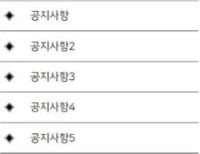

| 22361045 박수연 | 날씨 확인하기 폼 양식 게시판 | |
계정 생성하기Home / 계정 생성하기 | ||
이 사이트에 회원가입은 쉽습니다. |
사용자명 비밀번호 기억하기 회원가입 최근 글  | |
| 계정 상세 사용자명(필수) 이메일 주소(필수) 비밀번호 선택 (필수) 비밀번호 확인 (필수) |
프로필 상세 이름 (필수) 이 란은 다음이 볼 수 있습니다. 모두 변경하기 영어이름 (필수) 이 란은 다음이 볼 수 있습니다. 모두 변경하기 성별 (필수) 여자 남자 이 란은 다음이 볼 수 있습니다. 나만 생년월일(필수) 이 란은 다음이 볼 수 있습니다. 나만 | |